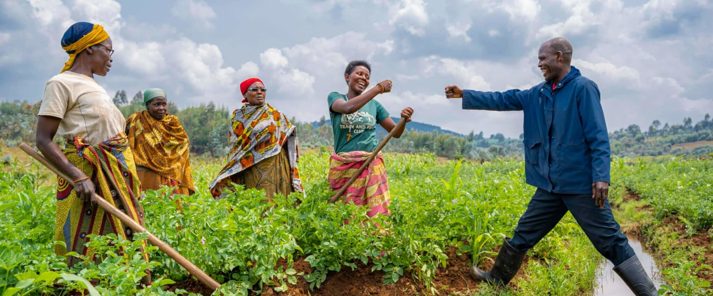
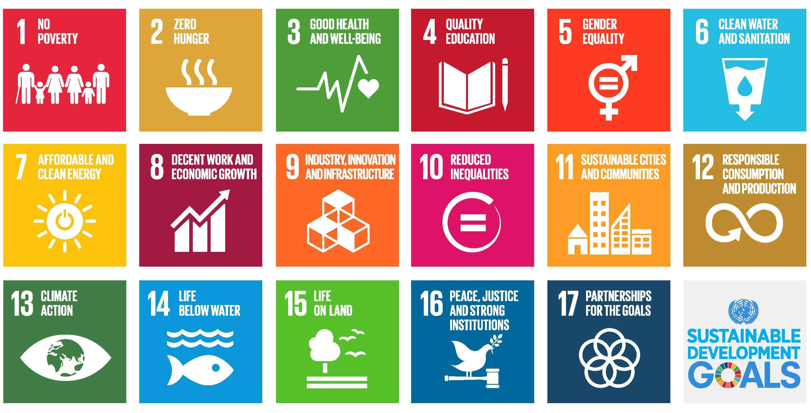
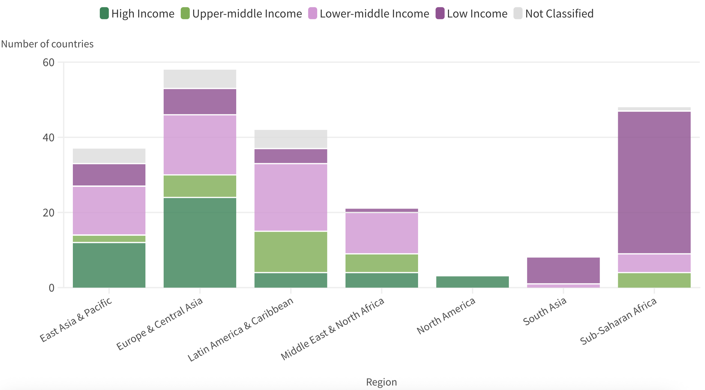
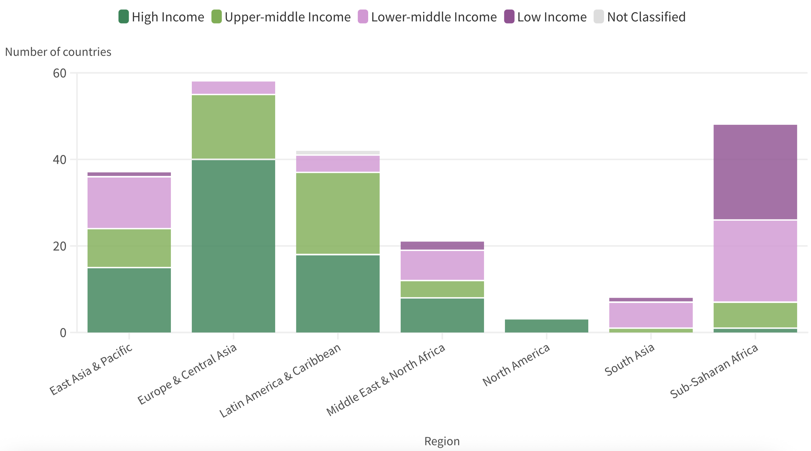
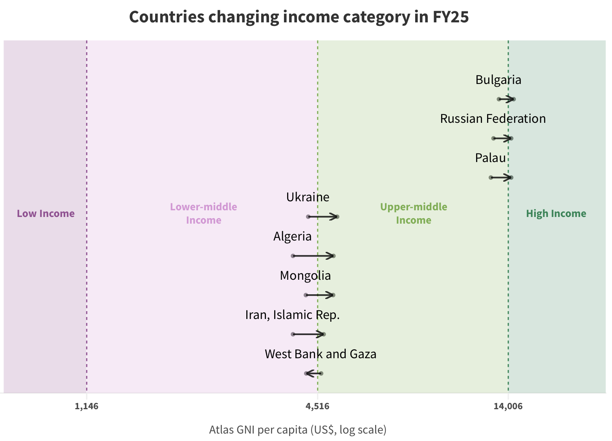
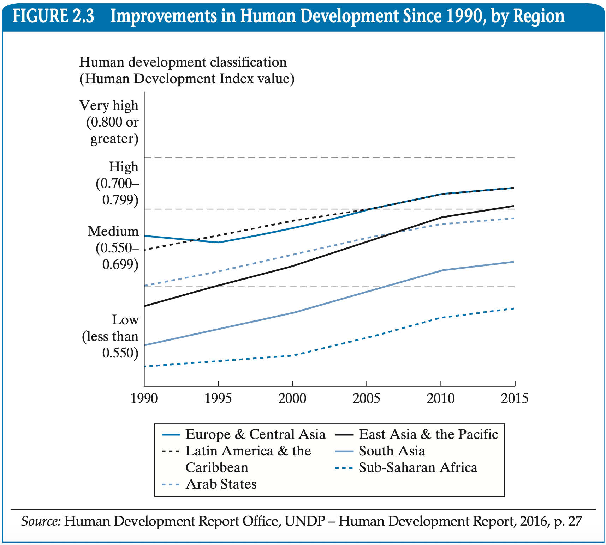
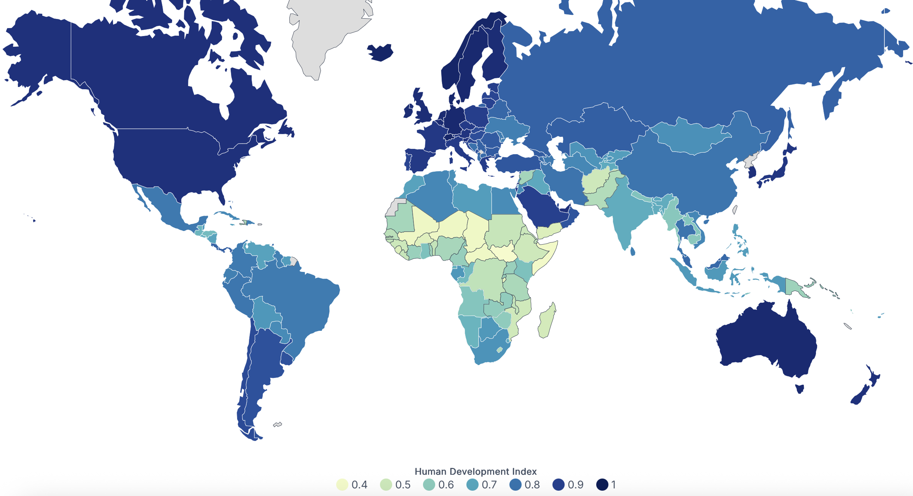
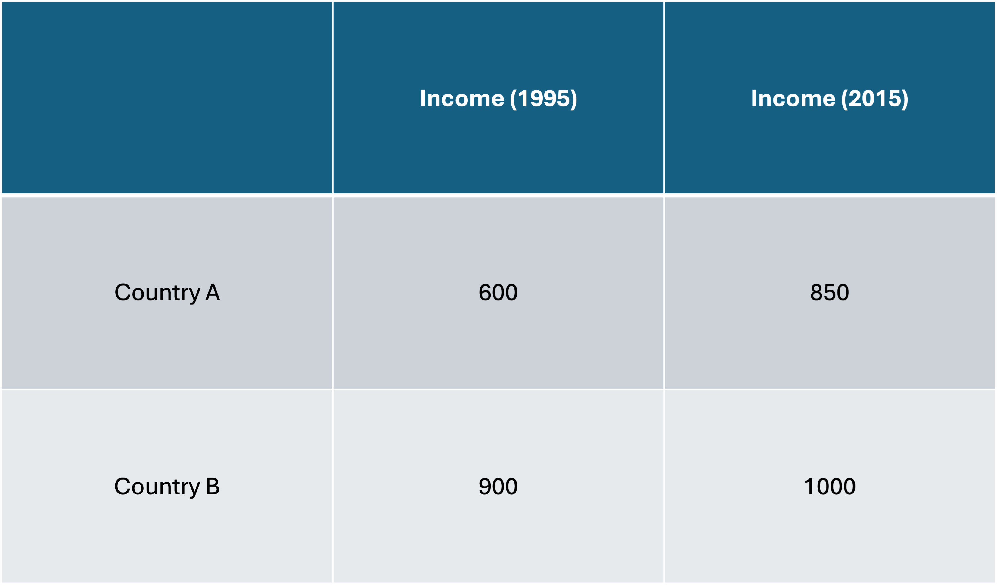
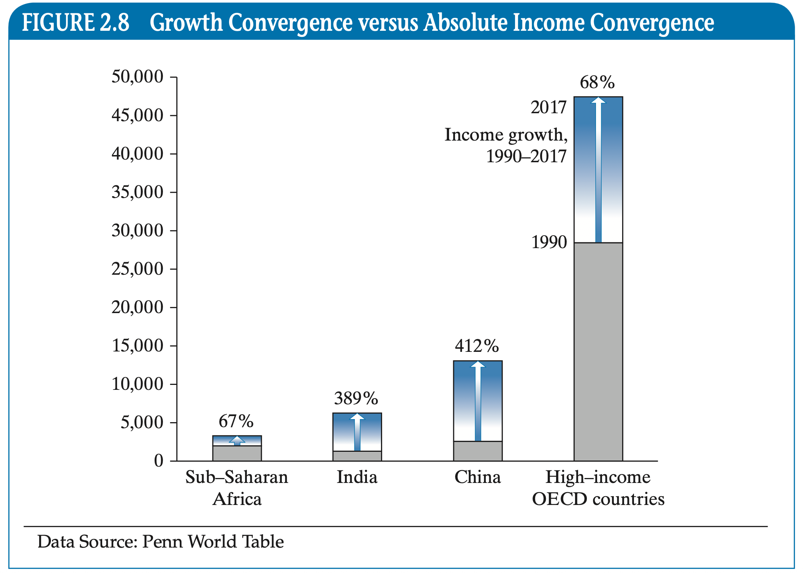

Growth and Developmoent
EC 390 - Development Economics
2025
Living Standards Across the World
People Live Differently
Who woulda thunk?
We can make some coarse comparisons across countries by some measures we will detail later
- One of those is Gross National Income
- It is like GDP plus stuff:
- It adds the money that the country’s citizens and companies make outside of the country
- It subtracts what foreigners make inside the country and send out
- It is like GDP plus stuff:
Take for example the per capita GNI of different countries:
- Japan $36,030
- Nigeria $1,250
- France $45,180
- US $83,660
- Brazil $9,950
- Australia $62,550
People Live Differently
We can think about living standards across the globe in four “stylised strata”:
- Highest
- 2nd Highest
- 2nd Lowest
- Bottom
Let’s dive in and see
Bottom
- Almost 700 million people (8.5% of the global population) live in extreme poverty
- That is qualified as living on less than $2.15 per day
- They will likely have serious concerns about their health, nutrition, education, sanitation, potable water, and housing
- They grow their own food and make their own shelter.
- They are essentially in a subsistence economy


2nd Lowest
Not officially extremely poor, but I think we would usually consider them as very poor
- About 1.7 Billion people live on less than $3.65 per day
- Employment is most likely informal
- Likely get around on cheap and barely functioning vehicles
- Water may only be potable after boiling or adding chlorine
- Possibly less hazardous cooking materials used
Still likely suffer from one or more components of poverty, although not enough to be officially classified as multidimensionally poor
2nd Highest
- We can think of people in this strata as living on about $15 per day
- More than 75% of the world lives at this level \(\rightarrow\) we would consider them as middle income by global standards
- They will live in more urban areas
- Employment may still be informal with minimal stability
- They probably have a TV
- Have some education
Children are likely to survive early childhood
Nuevo Zirosto, Michoacan, Mexico
Highest
Close to a billion people live at this level
We are all here
- Not millionaires but live comfortably
- Formal jobs, generally with some sort of labor protection
- TVs, high-speed internet, smartphones, laptops, refrigerators, dishwashers, etc.
- Food is not necessarily an issue
- Children will be healthy
- Although obesity has rapidly become a problem
- High life-expectancy at birth
- Life will have ups and downs but very unlikely to fall below this stratum
Movement Across Strata
It is possible to move across strata, but the probabilities are usually low
Usually movements will occur within levels, where individuals gain greater relative wealth
Interestingly enough, the lower strata are generally aware of what life is within the higher levels.
The opposite is not necessarily true
Central Role of Women
Women and Poverty
There is a disturbing phenomenon that occurs with women in the world
Female-headed households are more prevalent yet:
- Yet they are more likely to be poor and malnourished
- And Less likely to receive medical care, clean water, sanitation, and other basic needs
- Less likely to attain education
- Less likely to have a job
- And all while providing childcare and household management
- Let’s add to this income disparity between men and women for the same work
Women and Poverty
A very naïve thought might be that the “markets are rewarding productivity”
- This would largely ignore historical institutions which purposefully limit women’s participation in the market
- Social norms or legislation often prohibit women from owning property or signing financial contracts without their husband’s signature
- A large proportion of women’s work in the home is not renumerated, so it is incorrectly thought to be as unproductive
- Importantly, there has been studies that have found that where women’s share of income within the home is relatively high, there is less discrimination against girls and women are better able to meet their own needs and those of their children
Women and the Informal Sector
They often make up the bulk of the informal-sector labor supply
- This form of work comes with:
- Low wages
- Unstable jobs
- No social or employee benefits
- Less than desirable working conditions
Development Goals
17 Sustainable Development Goals
In 2015, the UN adopted 17 Development Goals to be achieved by 2030.
We are determined to end poverty and hunger, in all their forms and dimensions, and to ensure that all human beings can fulfil their potential in dignity and equality and in a healthy environment.
There are three underlying principles that guides them:
- Universality principle Apply to every nation
- Integration principle There are interrelationships to consider between goals
- Transformation principle Not sufficient to half-ass it
17 Sustainable Development Goals
Critique of Goals
They are not perfect by any measure.
One of my personal critiques is that it unfortunately relies on humans, but other than that we have:
- Goals may not be prioritised
- Too broad goals and difficult to address them all at once
- Trade-offs exist and some goals may be contradictory
- Economic growth (Goal 8 and 9) may require environmental sacrifices (Goal 13 and 15)
- Lack of binding agreements
- This is a general problem with everything the UN does
- Different access to resources across the globe
Classifying Countries
How Can We Classify Nations?
An imperfect way we use is by their GNI per capita levels
This creates 4 classifications:
- Low-Income Countries (LICs)
- Lower-Middle-Income Countries (LMCs)
- Upper-Middle-Income Countries (UMCs)
- High-Income Countries (HICs)
How Can We Classify Nations?
An imperfect way we use is by their GNI per capita levels
This creates 4 classifications:
- Low-Income Countries (LICs)
Countries with a GNI per capita less than $1,135 in 2024
- Lower-Middle-Income Countries (LMCs)
- Upper-Middle-Income Countries (UMCs)
- High-Income Countries (HICs)
How Can We Classify Nations?
An imperfect way we use is by their GNI per capita levels
This creates 4 classifications:
- Low-Income Countries (LICs)
- Lower-Middle-Income Countries (LMCs)
Countries with a GNI per capita between $1,136 and $4,495 in 2024
- Upper-Middle-Income Countries (UMCs)
- High-Income Countries (HICs)
How Can We Classify Nations?
An imperfect way we use is by their GNI per capita levels
This creates 4 classifications:
- Low-Income Countries (LICs)
- Lower-Middle-Income Countries (LMCs)
- Upper-Middle-Income Countries (UMCs)
Countries with a GNI per capita between $4,496 and $13,935 in 2024
- High-Income Countries (HICs)
How Can We Classify Nations?
An imperfect way we use is by their GNI per capita levels
This creates 4 classifications:
- Low-Income Countries (LICs)
- Lower-Middle-Income Countries (LMCs)
- Upper-Middle-Income Countries (UMCs)
- High-Income Countries (HICs)
Countries with a GNI per capita greater than $13,935 in 2024
Growth Over Time (1995)
Growth Over Time (2023)
Movements Are Clearly Possible
All it takes is a higher GNI per capita level
- GNI, as we saw, is simply a measure of income for the country It can increase or decrease
- Per Capita means per person Populations can shift for many reasons
But achieving a higher income status does not necessarily eliminate the “developing country” tag
- Say a country achieves a high enough GNI per capita to be classified as a HIC
- This country has a history of not being good at managing debt or a weak financial system
- This country is highly susceptible to dropping in income
- Because it’s probably happened before
Latest Shifts
Purchasing Power Parity
A Less Imperfect Way to Compare Countries
Enter Purchasing Power Parity (PPP)
- Calculates GNI using a common set of international prices for all goods and services
- Main idea: Create a basket of goods needed to live Calculate price in each country and create an index
What could be a problem with this?
- The goods that make up the basket may be subjective
How To Think About PPP?
PPP adjusts the fact that the same amount of money buys very different baskets of goods in different countries
It helps “equalize” incomes across nations, otherwise we get:
Without PPP
- Person A earns $10,000 in Costa Rica
- Person B earns $20,000 in the US
You’d say that Person A is poorer than Person B
With PPP
- Say prices are half as high in Costa Rica than in the US
- Then $10,000 in Costa Rica gives the same purchasing power as $20,000 in the US
If you ever need to do a quick calculation in a different country, find out how much a Big Mac costs
PPP Example
Let the basket of goods be: a toothbrush
- Price of a toothbrush in the US: 1 USD
- Price of a toothbrush in Mexico: 0.80 MXN
We can find the “Exchange Rate” by:
\[\begin{align*} PPP_{US,MEX} = \dfrac{Cost_{US}}{Cost_{MEX}} = \dfrac{1}{0.8} = 1.25 \end{align*}\]
This means that 1 MEX is worth approx. 1.25 USD
Now that we know that, we can compare GNIs
PPP Example
Let Mexico GNI per capita be 40,284 MXN.
We found that \(PPP_{US,MEX} = 1.25\)
Then we have:
\[\begin{align*} GNI_{MEX} \times PPP_{US,MEX} = 40,284 \times 1.25 = 50,355 \end{align*}\]
Mexico’s GNI per capita is equivalent to 50,355 USD
But this is conditional on the basket of goods we consider
PPP Example 2
Now we have two goods, so we create a price index
- Consider a basket made up of a toothbrush and toothpaste
- Price of a toothbrush in the US is 2 USD
- Price of a toothbrush in Mexico is 2 USD
Then the basket of goods in the US would be \(1 \, USD + 2 \, USD = 3 \, USD\)
A basket of goods in Mexico would be \(0.80 \, MXN + 2 \, MXN = 2.8 \, MXN\)
\[\begin{align*} PPP_{US,MEX} = \dfrac{Cost_{US}}{Cost_{MEX}} = \dfrac{3}{2.8} \approx 1.07 \end{align*}\]
So, under this new basket of goods, Mexican GNI would be equal to how many USD? $43,104
Defining Development
So far we have only touched on one possible way to measure a country’s development
We believe that income is typically a good indicator for other signals about well-being, but it is not perfect
We can also consider other objective measures for development:
- Infant/child mortality
- Mother/child health
- Life expectancy
- Disease prevalence
- Primary school completion rates
- Literacy rates
- Gender differences within rates
So we can think of a more comprehensive way to measure development
Human Development Index
Defining Development
Recall we have a large list of factors to possibly consider when measuring development
- What if a country has a high life expectancy but low literacy? How can we compare that country with high literacy but low life expectancy?
We can then consider using the Human Development Index (HDI)
- This measures the national socioeconomic development by combining education, health, and adjusted real income per capita
- It goes from 0 (lowest human development) to 1 (highest human development)
How is HDI Measured?
Since there are three separate components, we first have to measure those.
Thankfully it is not complicated
Each component is calculated as a ratio given by the distance above the minimum to the maximum level that a country has achieved
\[\begin{align*} \text{Dimension Index} = \; \dfrac{\text{Actual Value} - \text{Min Value}}{\text{Max Value} - \text{Min Value}} \end{align*}\]
The dimensions used are:
- Health Life Expectancy
- Education Average Years of Schooling & Expected Years of Schooling
- Income PPP adjusted per capita GNI
How is HDI Measured?
Once we have these values, we calculate the HDI using a geometric mean
- This allows for imperfect substitution between the factors when measuring economic development of countries
- The formula is then:
\[\begin{align*} HDI = H^{1/3}E^{1/3}I^{1/3} \end{align*}\]
Where:
\(H =\) Health Index \(\;\;\;\;\; E =\) Education Index \(\;\;\;\;\; I =\) Income Index
HDI - Interpreting the Value
After having obtained all 3 individual indices and calculated the HDI, we get a number between 0 and 1
The most recent classifications are:
- Low Human Development (< 0.550)
- Medium Human Development (0.550 - 0.699)
- High Human Development (0.700 - 0.799)
- Very High Human Development (\(\geq\) 0.800)
HDI Through Time
HDI Snapshot
Difference and Similarities
To Drive the Point Home
There are 10 features that help us define key similarities and differences among developing countries
An important caveat to remind yourself of is that when we compare nations, we use averages which inherently blur some important information
The textbook has their own 10. I’ll do my own 8:
- Physical and Human Resource Endowment
- Per Capita Incomes and GNI Levels Relative to the Rest of the World
- Climate
- Population Size, Distribution, and Growth
- Historical Role of International Migration
- International Trade Benefits
- Basic Scientific and Technology Research & Development Capabilities
- Efficacy of Domestic Institutions
Physical and Human Resource Endowment
- Current developed countries had plentiful natural resources in early global development
- Current developing countries are typically lacking natural resources
- If they do, resource extraction may be inefficient
- Or other developed nations may take advantage
- Skilled human resource endowment may be eve more stark
- Think about where the “best” universities in the world are concentrated
Relative Size of GNI per Capita
- Many people in developing countries are
- Not everyone but a significant proportion
- Individuals that are in developed countries had more economic freedom in their earlier stages
- Developed countries got ahead economically in their early stages
- They leveraged that accumulated wealth to extract resources
Climate Differences
- Most developing countries are in a tropical or sub-tropical climate
- Most developed contries have more temperate climates
- High head and humidity degrade soil and other natural goods
- There is also a higher prevalence of tropical diseases
- The tropics are great for life to take hold at its most basic stages

Population Size, Distribution, and Growth
- Population growth in developed countries was
International Migration
- Developed countries during development saw benefits from migration of labor
- People migrate from low-income countries to higher-income countries seeking a higher quality of life
- Developing countries suffer from Brain Drain
- “Skilled” workers leave their home countries and work in developed countries
- Individuals migrate for a better quality of life for themselves and their family
- Brain Drain causes slow growth in developing countries as they lose valuable human capital
International Trade
- Developed countries benefited from free trade early on
- Free Trade: Goods are imported/exported without obstacles like quotas or tariffs
- Now we are going through a drastic shift in attitudes toward Free Trade
- Brexit
- US Global Tariffs
Basic Scientific and Technology Research & Development Capabilities
- Developed countries got ahead early with their scientific and technological research, primarly due to their ability to invest in them
- Developing countries are lagging far behind in R&D
- Not necessarily their fault
Efficacy of Institutions
- Many developed countries began with and still have strong institutions
- Well defined property rights
- Well defined rule of law
- Strong judicial system
- Colonial powers established institutions that systemically created high inequality and extraction of resources to benefit foreign powers
- After countries obtain independence, self-governance is established but often through weak institutions and high possibility of corruption
Developed vs Developing Countries
Unfortunately, developed countries are not always a good template of growth
Historically, nations that are ahead got there through a not-so-great reason
However, given globalization and stronger international market participation growth is normalizing in the world
Convergence and Divergence of Countries
Are living standards in developing countries converging to developed countries? Or diverging?
- Convergence: Tendency for per capita income (or output) to grow faster in lower-income countries than in higher-income countries
- Low-income countries are “catching up”
- Divergence: A tendency of per capita income (or output) to grow faster in higher-income countries than in lower-income countries
- High-income countries are “pulling away”
Relative vs Absolute Convergence
- Relative Convergence: Are developed countries growing at a faster rate than developed countries?
- It is easier to grow at lower levels of wealth
- There are higher returns to small increases in productivity, wealth, etc.
- Because of this, the relative gap between developing and developed countries would shrink
- Poorer countries are cathing up, but not necessarily matching richer countries
Relative vs Absolute Convergence
- Absolute Convergence: Is the absolute gap between developing and developed countries shrinking?
- Even if incomes are growing at a faster rate in poorer countries, real incomes could be increasing more in developed countries
- Developed countries would remain ahead
- Absolute convergence implies that they will equalize at some point
- Highly unlikely to happen
- It is possible to have relative convergence without absolute convergence
- However, if there is absolute convergence, then there will be relative convergence as well
Calculating Convergence
We will use incomes to measure convergence (not perfect but it does the job). Additionally, we will look at growth rates of incomes.
- Say that we have two countries, A and B.

Measure growth as:
\[\begin{align*} \text{Growth Rate} = \dfrac{\text{New} - \text{Old}}{\text{Old}} \end{align*}\]
Country A \[\begin{align*} \text{Growth Rate} = 41.6\% \end{align*}\]
Country B \[\begin{align*} \text{Growth Rate} = 11.11\% \end{align*}\]
Graphical Example

- Average incomes in South Asia and China are growing at a faster rate than those in high-income OECD countries (56% and 196% vs 24%)
- There is evidence of relative country convergence
- The absolute increase in incomes is lower in South Asia and China than in high-income OECD countries (About $1,000 and $2,500 vs $4,000)
- This is evidence against absolute country convergence
Long-Run Causes of Comparative Development
Causes of Development
So far we have focused on the differences between the developing and developed world
- We are also interested in how countries progress through stages of economic development
- Usually starts with geography/climate/natural resources
- Which leads to institutions forming
- Which leads to socioeconomic conditions
- Which leads to development
In reality it is very messy, since countries do not exist in isolation are subject to international interactions
EC390, Lecture 01 | Growth and Development